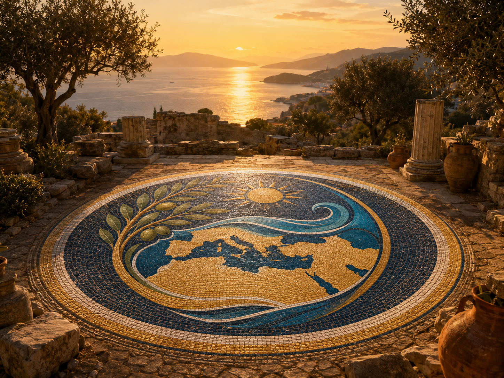
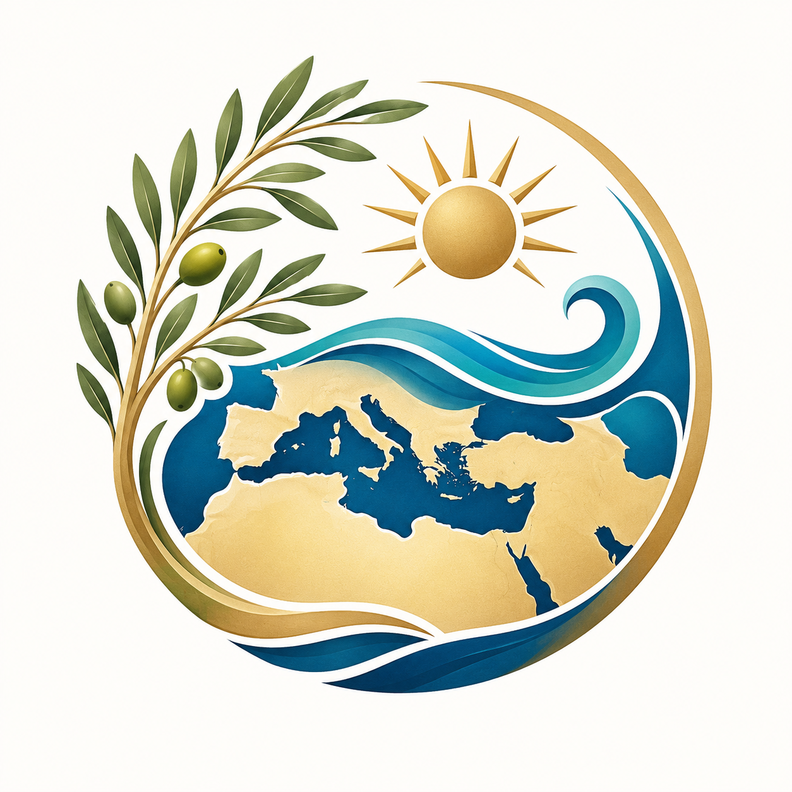
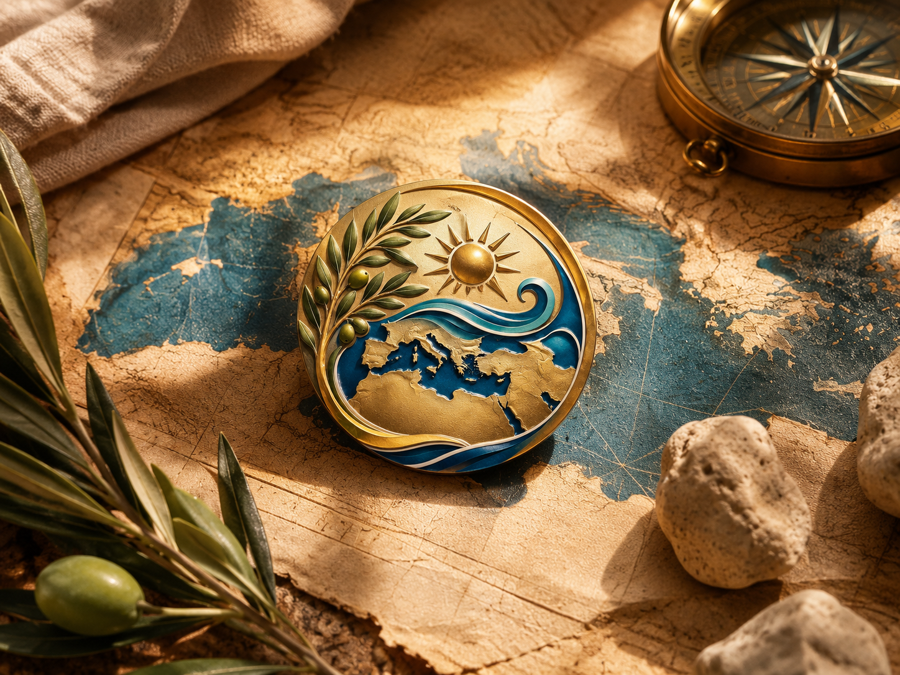
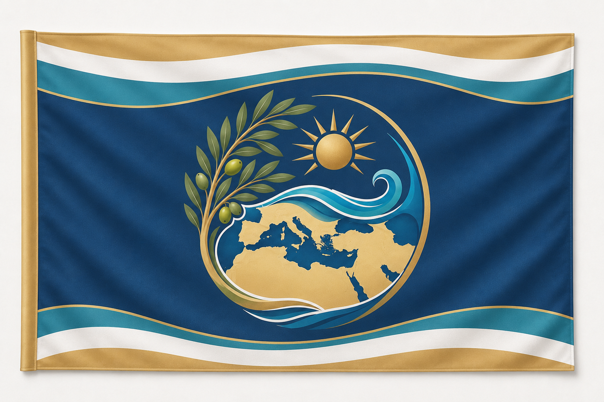
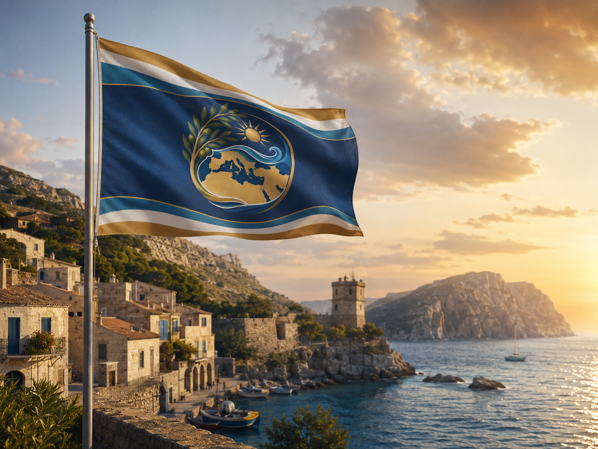
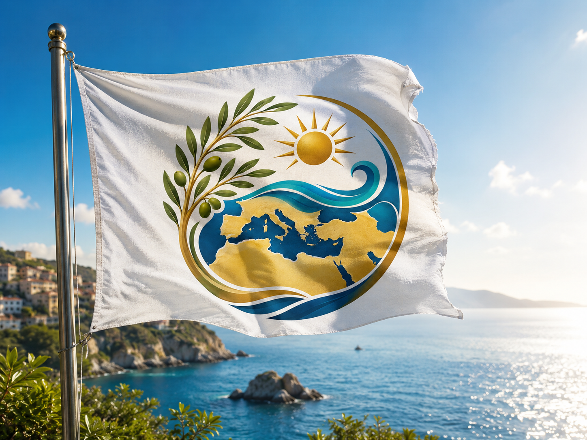
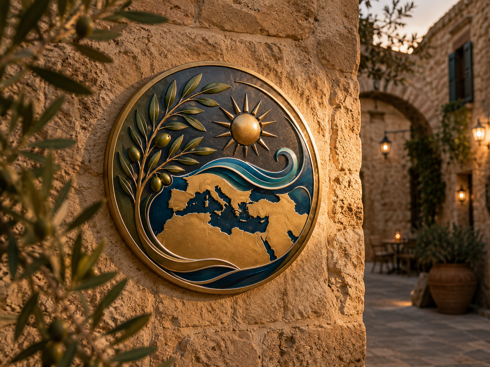

Keď sa povie Stredomorie, väčšina ľudí si predstaví modré more, slnko, olivovníky, staré prístavy, malé kamenné dedinky a život, ktorý sa po stáročia odohráva pri pobreží.
Stredozemné more však nie je iba dovolenkovou destináciou. Je spoločným priestorom Európy, Afriky a Ázie. Spája krajiny s rozdielnymi jazykmi, náboženstvami, dejinami a tradíciami.
Práve preto vzniká zaujímavá otázka:
Má Stredomorie vlastnú vlajku alebo symbol, pod ktorým by sa mohli nájsť všetky jeho krajiny?
Má Stredomorie oficiálnu vlajku?
Najpresnejšia odpoveď znie:
Stredomorie nemá jednu všeobecne uznávanú oficiálnu vlajku ani spoločný oficiálny štátny znak.
Stredomorie totiž nie je štát ani jednotný politický celok. Je to geografický, historický a kultúrny priestor, ktorý tvoria samostatné krajiny troch kontinentov.
Každá z nich má vlastnú vlajku a svoje štátne symboly. Neexistuje jedna stredomorská vláda alebo medzinárodná autorita, ktorá by mohla prijať vlajku platnú pre celý región.
Existujú však symboly viacerých organizácií a iniciatív, ktoré sa snažia spoločnú identitu Stredomoria vizuálne vyjadriť.
Únia pre Stredomorie má svoj vlastný znak
Jedným z najvýznamnejších regionálnych zoskupení je Únia pre Stredomorie, známa pod skratkou UfM.
Ide o medzivládnu organizáciu, ktorá spája všetky krajiny Európskej únie a 16 krajín južného a východného Stredomoria. Jej cieľom je podporovať regionálnu spoluprácu, dialóg, stabilitu a spoločné projekty.
Logo Únie pre Stredomorie tvorí jednoduchý obraz:
- Stredozemné more,
- loď,
- odraz lode na hladine,
- biela horná a modrá spodná časť.
Podľa oficiálneho grafického manuálu organizácie znak predstavuje loď odrážajúcu sa v Stredozemnom mori. Súčasťou loga je aj názov organizácie v angličtine, francúzštine a arabčine.
Je to silný symbol spojenia a spolupráce, ale dôležité je rozlíšenie:
Nie je to znak celého Stredomoria. Je to oficiálne logo konkrétnej medzinárodnej organizácie.
Tri kruhy Stredomorských hier
Ďalší známy symbol používa Medzinárodný výbor Stredomorských hier.
Jeho emblém tvoria tri prepojené kruhy, ktoré sa odrážajú v mori. Každý kruh predstavuje jeden kontinent obklopujúci Stredozemné more:
- Európu,
- Afriku,
- Áziu.
More pod kruhmi je spoločným a zjednocujúcim prvkom. Znak bol prvýkrát predstavený počas Stredomorských hier v Splite v roku 1979.
Myšlienku znaku možno vystihnúť slovami:
Jedno more, tri kontinenty a spoločný priestor.
Ani tento symbol však nie je všeobecnou vlajkou Stredomoria. Je oficiálnym znakom Stredomorských hier a organizácie, ktorá ich zastrešuje.
Pokus o vytvorenie spoločnej vlajky
V roku 2020 vznikla zaujímavá iniciatíva s názvom Vlajka pre Stredomorie.
Zorganizovalo ju talianske kultúrne združenie Progetto Mediterranea, ktoré predtým absolvovalo dlhú plavbu po Stredomorí, Čiernom mori a Atlantiku s cieľom skúmať spoločné korene stredomorskej identity.
Do verejnej výzvy bolo zaslaných:
- 1 002 návrhov vlajok,
- od takmer 900 dizajnérov, umelcov, detí a ďalších účastníkov,
- pričom odborná komisia vybrala štyroch finalistov.
V následnom verejnom hlasovaní odovzdalo hlas 5 803 ľudí. Víťazný návrh autorov Salvatore Scollo, Hushmand Toluian a Guglielmo Persano získal 1 797 hlasov.
Víťazná vlajka pracuje so slnkom, olivovníkom a prírodnými prvkami Stredomoria. Podľa autorov slnko predstavuje energiu a život, zatiaľ čo olivovník symbolizuje dlhovekosť, mier a silu.
Vlajku prvýkrát slávnostne vztýčili 24. júla 2020 v talianskom Porto Maurizio. Organizátori ju neskôr poslali aj predstaviteľom stredomorských krajín.
Napriek názvu však nejde o oficiálnu vlajku prijatú vládami stredomorských štátov. Je to súkromná kultúrna iniciatíva a pokus vytvoriť spoločný znak regiónu.
Čo by mohlo byť skutočným symbolom Stredomoria?
Pri hľadaní spoločného symbolu vzniká jeden zásadný problém.
Stredomorie je mimoriadne rozmanité. Symbol nesmie pôsobiť ako znak jednej krajiny, jedného náboženstva alebo jednej historickej civilizácie.
Grécky stĺp by príliš pripomínal Grécko. Rímska prilba by odkazovala najmä na Rímsku ríšu. Kríž, polmesiac alebo iný náboženský znak by nedokázal neutrálne zastupovať celý región.
Najsilnejším spoločným symbolom sa preto javí olivovník alebo olivová vetva.
Olivovník je po tisícročia súčasťou krajiny, hospodárstva, gastronómie a kultúry viacerých oblastí Stredomoria. UNESCO uvádza, že olivovník a najmä olivová vetva od staroveku symbolizujú mier, múdrosť a harmóniu.
Ďalším spoločným prvkom je samotné more. To jednotlivé pobrežia geograficky oddeľuje, ale zároveň ich po stáročia spájalo prostredníctvom plavby, obchodu, cestovania a kultúrnej výmeny.
K typickým symbolom Stredomoria preto môžeme zaradiť:
- olivovník alebo olivovú vetvu,
- modrú morskú vlnu,
- zlaté slnko,
- loď alebo plachtu,
- tri kontinenty,
- spoločný stôl,
- amforu alebo keramiku,
- mozaiku,
- vinič, obilie a citrusy.
Aj UNESCO opisuje stredomorskú stravu nielen ako zoznam jedál, ale ako súbor spoločných znalostí, rituálov, symbolov a tradícií. Dôležitou súčasťou je spoločné stolovanie, pohostinnosť, susedstvo, rešpektovanie rozmanitosti a medzikultúrny dialóg.

Ako by vyzeral symbol a vlajka Stredomoria podľa AI?
Nasledujúca časť je AI vizuálnou inšpiráciou. Nejde o oficiálny návrh, symbol žiadnej organizácie ani vlajku schválenú stredomorskými krajinami.
Cieľom bolo vytvoriť nový znak, ktorý by nepoužíval symboly jednej konkrétnej krajiny, ale spájal prvky spoločné čo najväčšej časti Stredomoria.
Umelá inteligencia vytvorila tri vizuály:
- samostatný symbol alebo znak Stredomoria,
- návrh reprezentatívnej vlajky,
- ukážku znaku umiestneného na vlajke pri stredomorskom pobreží.
1. Návrh symbolu Stredomoria podľa AI

Symbol tvorí kruhová kompozícia, v ktorej sa spájajú mapa Stredomoria, olivová vetva, more, slnko a línie pripomínajúce pohyb alebo cestovanie.
Prečo AI zvolila práve takýto symbol?
Tento znak nie je oficiálnym symbolom Stredomoria. Ide o vizuálnu interpretáciu vytvorenú podľa prvkov, ktoré sú spoločné veľkej časti stredomorského priestoru.
Cieľom bolo vytvoriť symbol, ktorý nebude patriť iba jednej krajine, jednému náboženstvu alebo jednému národu.
Kruhový tvar
Kruh predstavuje:
- jednotu krajín okolo spoločného mora,
- nepretržité spojenie medzi Európou, Afrikou a Áziou,
- kolobeh života, obchodu, cestovania a kultúrnych vplyvov,
- slnko a horizont.
Kruh zároveň pôsobí ako ochranný rámec, v ktorom je Stredozemné more stredobodom celého regiónu.
Mapa Stredomoria
V centre znaku sa nachádza zjednodušená mapa Stredozemného mora a okolitých brehov.
Má pripomínať, že Stredomorie nie je iba južná Európa. Spája tri kontinenty:
- Európu,
- Afriku,
- Áziu.
Mapa je zámerne štylizovaná. Nie je to presná kartografická mapa, ale symbol spoločného priestoru, ktorý sa po tisícročia prepájal obchodom, plavbou, migráciou, gastronómiou a kultúrou.

Olivová vetva a olivy
Olivovník bol zvolený ako jeden z najsilnejších spoločných symbolov regiónu.
Predstavuje:
- mier,
- odolnosť,
- dlhý život,
- tradíciu,
- úrodnosť,
- pohostinnosť,
- spojenie človeka s krajinou.
Olivovníky rastú na európskom, africkom aj ázijskom pobreží Stredozemného mora. Preto olivová vetva nepôsobí ako symbol jednej konkrétnej krajiny, ale celého regiónu.
Jej zakrivenie zároveň vytvára jednu polovicu kruhu a obrazne spája jednotlivé pobrežia.
Zlaté slnko
Slnko symbolizuje:
- svetlo,
- teplo,
- energiu,
- leto,
- nádej,
- otvorenosť,
- dovolenkovú atmosféru.
Zlatá farba má pripomínať ranné a večerné slnko nad morom, pieskové pobrežia, kamenné mestá a teplé tóny stredomorskej krajiny.
Slnko je umiestnené nad morom, pretože práve kombinácia slnka a mora je jedným z najznámejších obrazov Stredomoria.
Modré a tyrkysové vlny
Vlny sú spoločným prvkom všetkých krajín ležiacich okolo Stredozemného mora.
Symbolizujú:
- samotné more,
- cestovanie,
- slobodu,
- pohyb,
- obchodné a kultúrne spojenia,
- neustálu výmenu medzi národmi.
Viaceré odtiene modrej predstavujú rôzne podoby mora – od tmavomodrých hlbokých vôd až po tyrkysové zátoky pri pobreží.
Zakrútená vlna na pravej strane zároveň vyvažuje olivovú vetvu na ľavej strane. Príroda pevniny a sila mora tak vytvárajú jeden celok.
Zlatý oblúk
Zlatý oblúk okolo znaku predstavuje:
- slnečný horizont,
- spojenie pobreží,
- ochranu spoločného dedičstva,
- cestu okolo Stredozemného mora.
Môže pripomínať aj trajektóriu letu alebo plavby. Jemne tak odkazuje na cestovanie bez toho, aby sa v znaku muselo nachádzať lietadlo alebo loď.
Prepojenie zeme a mora
V spodnej časti sa spájajú modré a zlaté línie.
Modrá predstavuje more, zlatá pevninu. Ich prepojenie vyjadruje myšlienku, že stredomorské krajiny síce oddeľuje voda, ale tá istá voda ich zároveň spája.
To je hlavná myšlienka celého znaku:
Stredozemné more nie je hranicou medzi krajinami, ale ich spoločným priestorom.
2. Návrh vlajky Stredomoria podľa AI

Na druhom vizuáli bol symbol umiestnený do stredu tmavomodrej vlajky.
Tmavomodrá verzia pôsobí:
- oficiálnejšie,
- reprezentatívnejšie,
- slávnostnejšie,
- výraznejšie z väčšej vzdialenosti.
Tmavomodrá plocha predstavuje hĺbku Stredozemného mora, pokoj, stabilitu a dôveru.
Horným a spodným okrajom vlajky prechádzajú zvlnené biele, tyrkysové a zlaté pásy. Ich tvar pripomína pohyb mora, pobrežie a meniace sa odtiene vody.
Biela farba predstavuje mier a otvorenosť. Tyrkysová odkazuje na pobrežné vody a zlatá na slnko, piesok, históriu a staré kamenné mestá.
Takáto verzia by mohla pôsobiť ako hypotetická reprezentatívna vlajka spoločného stredomorského priestoru.

3. Symbol na bielej vlajke pri pobreží

Tretí obrázok ukazuje rovnaký symbol umiestnený na jednoduchej bielej vlajke vejúcej nad stredomorským pobrežím.
Biela verzia je pokojnejšia a čistejšia.
Biela farba symbolizuje:
- mier medzi národmi,
- otvorenosť,
- svetlo,
- spolužitie,
- spoločný priestor bez politických hraníc.
Na rozdiel od tmavomodrej reprezentatívnej vlajky je tu hlavnou dominantou samotný znak. Táto verzia preto pôsobí viac ako kultúrna, cestovateľská alebo mierová vlajka Stredomoria.
Pobrežie v pozadí ukazuje, ako by mohla vlajka pôsobiť v reálnom prostredí – napríklad v prístave, na lodi, pri kultúrnom podujatí alebo na mieste spájajúcom krajiny Stredomoria.
Čo znamenajú použité farby?
Tmavomodrá
Hĺbka mora, dôvera, pokoj a stabilita.
Tyrkysová
Čisté pobrežné vody, sviežosť, cestovanie a dovolenka.
Biela
Mier, otvorenosť, svetlo a typická svetlá architektúra mnohých prímorských miest.
Olivovozelená
Príroda, olivovníky, úrodnosť a tradícia.
Piesková a zlatá
Slnko, pobrežie, staré kamenné mestá, história a kultúrne dedičstvo.

Čo vyjadruje celý symbol?
Celý znak možno čítať ako spojenie piatich hlavných myšlienok:
More – slnko – príroda – spoločné korene – cestovanie.
Nevyzdvihuje jednu konkrétnu civilizáciu, náboženstvo alebo krajinu. Namiesto toho sa snaží ukázať to, čo majú stredomorské oblasti spoločné:
- život pri mori,
- olivovú kultúru,
- teplé podnebie,
- plavbu a cestovanie,
- obchod a výmenu,
- pohostinnosť,
- spoločné historické a kultúrne prepojenia.
Najstručnejšie vysvetlenie symbolu by mohlo znieť:
Olivová vetva predstavuje mier a spoločné korene, slnko život a energiu, modré vlny spoločné more a mapa spojenie Európy, Afriky a Ázie. Kruhový tvar ukazuje Stredomorie ako jeden prepojený priestor, v ktorom more krajiny neoddeľuje, ale spája.
Mohlo by mať Stredomorie raz spoločnú vlajku?
Teoreticky áno. Musela by však byť prijatá širším spoločenstvom krajín alebo organizáciou, ktorá by mala dostatočnú dôveryhodnosť a zastúpenie celého regiónu.
V praxi by bolo veľmi náročné nájsť symbol, ktorý by rovnako prijali krajiny južnej Európy, severnej Afriky, Balkánu aj Blízkeho východu.
Práve preto sú neutrálne prírodné prvky – more, slnko a olivovník – vhodnejšie než politické, štátne alebo náboženské znaky.
Možno Stredomorie spoločnú oficiálnu vlajku ani nepotrebuje. Myšlienka jedného symbolu však pripomína, že napriek rozdielom všetky jeho krajiny spája jedno more, spoločná história a kultúrne dedičstvo, ktoré presahuje hranice jednotlivých štátov.
A možno by jeho symbol naozaj mohol vyzerať práve takto.